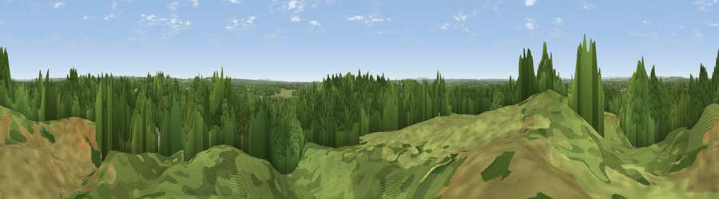

Matchams
#41567 in England · top 76% of its area beats it · near St LeonardsThe view, rendered

A 360° render of this exact spot computed from the terrain model, tree cover and land cover — summer colours, afternoon light, calibrated against photographs of famous viewpoints. Real trees, hedges and buildings will differ in detail.
The panorama
Grey silhouette: terrain skyline in each direction (720 bearings, Earth curvature and refraction included). Dashed green: skyline with trees (+15 m) and buildings (+8 m) as obstacles. Blue strip: how far the ground is visible on each bearing.
Where the view opens
Wedge length = distance to the farthest visible ground on that bearing (vegetation-aware). Rings at 10, 25 and 50 km.
What fills the view
59% woodland · 31% grassland · 6% built-up · 3% cropland
Angular shares of the visible panorama (visual magnitude), not map area. Landscape diversity 0.42 (0–1 Shannon).
Key numbers
More beautiful places nearby
The staircase of upgrades: each row has a higher view potential than everything closer. Driving times are estimates from straight-line distance, calibrated against real road routing — check an actual route before setting out.
| Place | Direction | Drive | Score |
|---|---|---|---|
| Viewpoint near St Leonards | S · 1 km | ~2 min | 37.9 |
| Viewpoint near Hurn | S · 5 km | ~12 min | 53.7 |
| Viewpoint near Merley | WSW · 11 km | ~21 min | 53.8 |
| Viewpoint near Merley | WSW · 11 km | ~21 min | 59.5 |
| Warren Hill | SSE · 12 km | ~22 min | 60.1 |
| Viewpoint near Corfe Mullen | WSW · 16 km | ~28 min | 60.9 |
| Viewpoint near Cranborne | NNW · 17 km | ~30 min | 65.0 |
| Viewpoint near Studland | SSW · 22 km | ~37 min | 80.9 |
50.81736, -1.81911 · source: osm peak · position refined by local search. Computed location — check access rights before visiting.